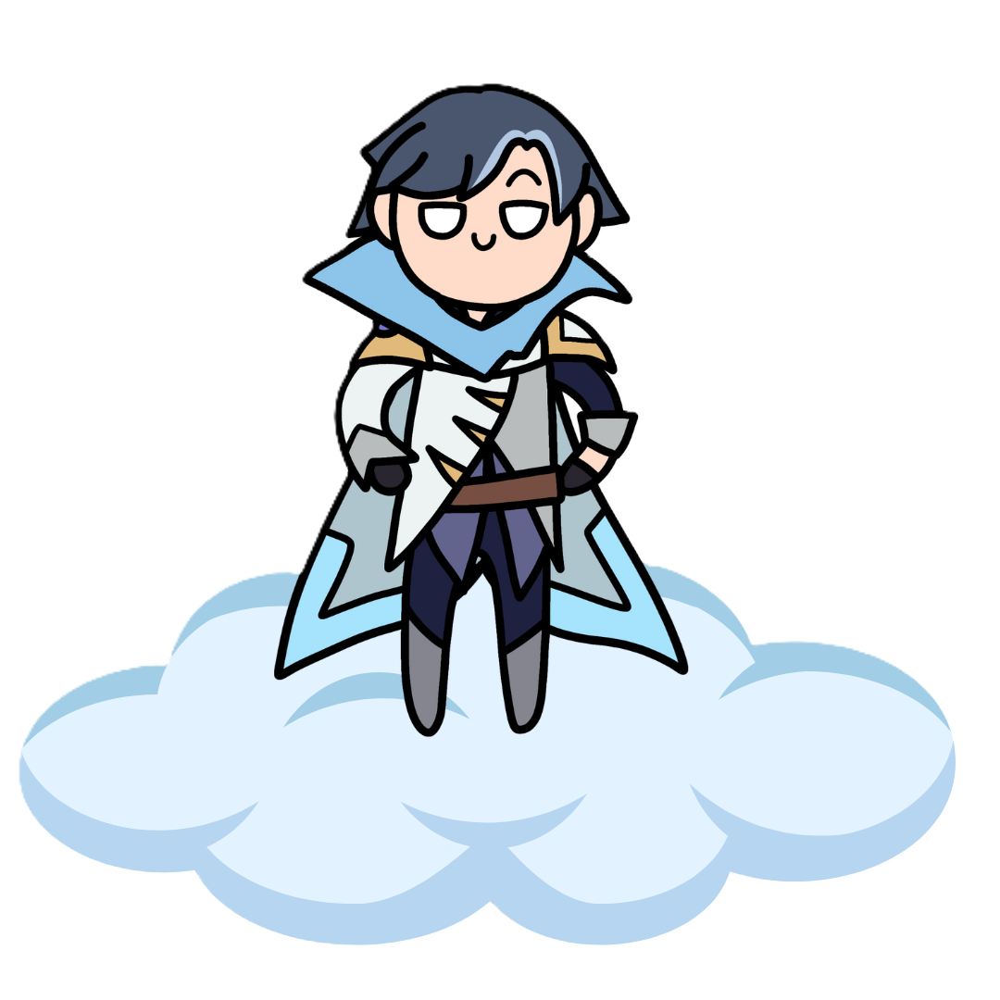

Bab 2 - Always

Always bersama, always ada di heart SN, always siap menghadapi masalah bersama, always nurut satu sama lain. Apapun yang terjadi, kak de em always with nanay gak akan kemana mana kak de em always sama nanay.